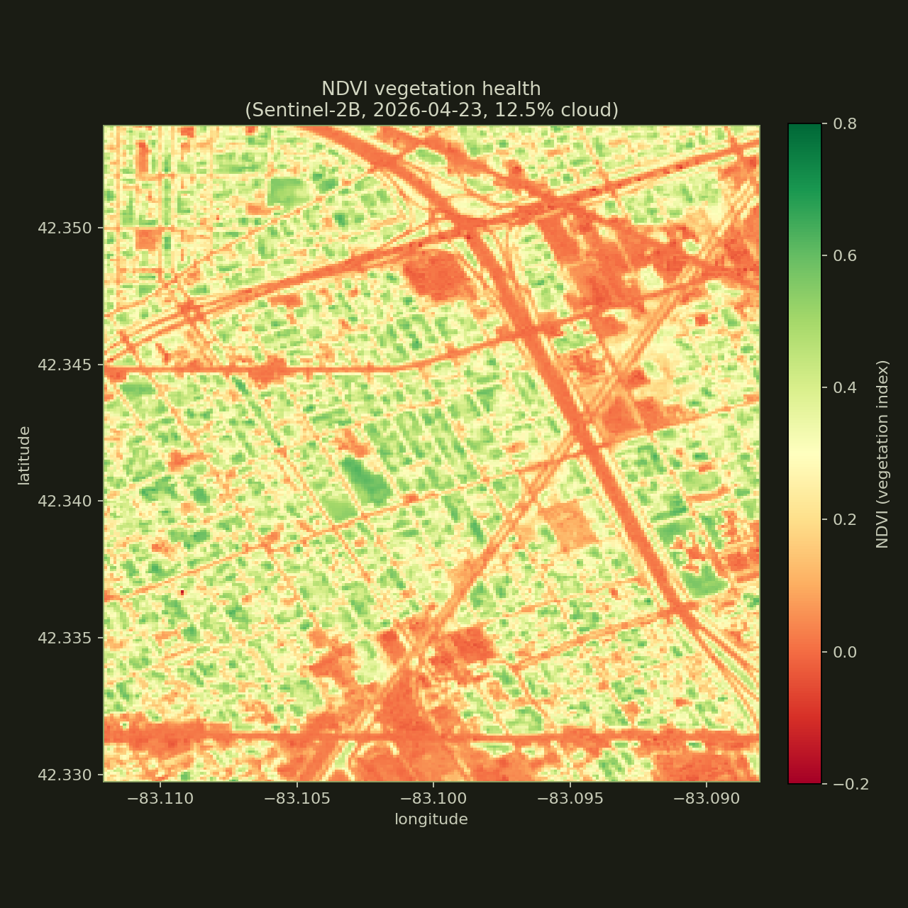
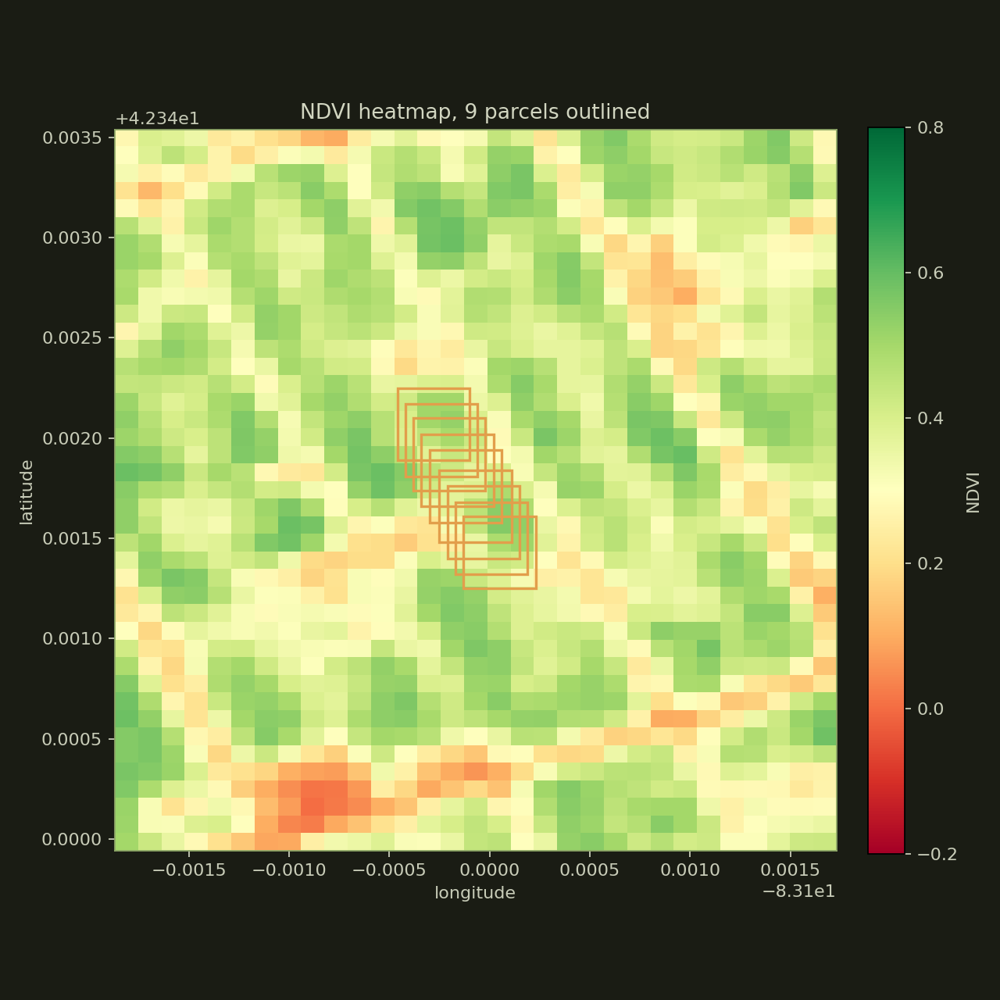

01 · This week
Latest cycle
Reading from local ledger...
Every week, Dryad pulls fresh Sentinel-2 imagery for nine vacant lots in Detroit, computes a vegetation index per parcel, and writes the result to a public ledger. This page is the live record.
Reading from local ledger...
Each line is one parcel. Higher NDVI = denser vegetation. The natural pattern is a spring greenup, peak in mid-summer, decline through fall, dormancy through winter. Anomalies (sudden drops > 0.15 in 7 days) are flagged automatically and emailed to the operator.


For full methodology and the resolution tradeoffs vs Google Maps, see docs.html#satellite.
| Cycle | Captured | Cloud % | Mean NDVI | Anomalies | Scene |
|---|---|---|---|---|---|
| No cycles loaded yet. | |||||